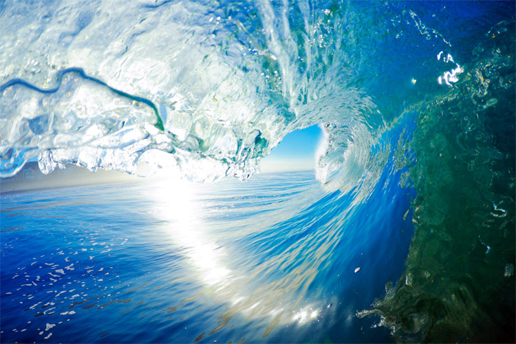

Scientific Overview
Oceanography is an interdisciplinary science integrating biology, chemistry, physics, and geology. Covering 71% of the Earth's surface, the ocean regulates our climate and supports half of all life on Earth.


Marine Biology & Ecology
Marine biology explores the life forms that inhabit the sea, from microscopic phytoplankton to the midnight abyss.
[Image of the layers of the ocean from the sunlight zone to the abyss]Physical Oceanography
This branch analyzes the mechanics of waves, tides, and massive currents like the Gulf Stream.


Chemical Oceanography
Examining the "chemical signature" of seawater, including salinity and dissolved gases.
Marine Geology
Marine geologists explore the seafloor's topography, studying seafloor spreading and tectonic movements.
[Image of the tectonic plate boundaries and seafloor spreading]
OCEANOGRAPHY
Unveiling the Blue Frontier
Comprehensive scientific insights into the Earth's final mystery.
The Scope of Marine Science
Oceanography is an interdisciplinary science that utilizes the principles of biology, chemistry, physics, and geology to study the ocean's environment. Covering 71% of the Earth's surface, the ocean regulates our climate and supports nearly 50% of all life on Earth.
Modern oceanography relies on satellite remote sensing, autonomous underwater vehicles (AUVs), and deep-sea submersibles to map the 95% of the ocean floor that remains unexplored.


Marine Biology & Ecology
Marine biology focuses on the physiological and behavioral adaptations of organisms living in saltwater. Life in the ocean is organized into distinct vertical zones based on light penetration.
- The Epipelagic Zone: The "Sunlight Zone" where photosynthesis occurs, home to 90% of marine life.
- The Hadal Zone: The deepest trenches where life exists under crushing pressure in total darkness.
- Biodiversity: Includes microscopic phytoplankton—the "lungs of the world"—which produce every second breath we take.
Physical Oceanography
Physical oceanographers study the movement of water and the transfer of energy. This includes the mechanics of waves, the pull of tides, and the behavior of massive currents like the Gulf Stream.
[Image of global ocean surface currents map]By analyzing water density and temperature gradients, scientists can predict how the ocean stores heat, which is essential for accurate global climate modeling.


Chemical Oceanography
This field examines the "chemical signature" of seawater. Beyond just salt, seawater contains trace metals, dissolved gases, and organic compounds that dictate the health of marine life.
- Salinity Ratios: Studying the constant proportions of major ions in the global ocean.
- The Carbon Sink: The ocean absorbs roughly 25% of human-generated CO2, acting as a buffer against rapid atmospheric heating.
- Hydrothermal Vents: Studying the unique chemicals released from the Earth's interior that support chemosynthetic life.
Marine Geology & Geophysics
Marine geologists explore the topography and composition of the seafloor. They use seismic reflection to look through layers of sediment to understand tectonic movements.
- Seafloor Spreading: How new crust is formed at mid-ocean ridges.
- Marine Sediments: Acting as a "climate diary," sediment cores reveal millions of years of Earth's temperature history.


The Global Circulation System
The "Global Conveyor Belt" (Thermohaline Circulation) is a constant motion in the ocean caused by a combination of thermic (temperature) and haline (salt) factors.
Cold, salty water sinks at the poles and travels the globe, taking 1,000 years to complete a single circuit. This process is vital for oxygenating the deep sea and feeding surface ecosystems.
Ocean Acidification
As the ocean absorbs CO2, it creates carbonic acid, which lowers the pH of the water. This chemical change is occurring faster now than at any time in the last 300 million years.
Biological Crisis: Acidic water dissolves the calcium carbonate shells of oysters, crabs, and corals, potentially collapsing the entire marine food chain.

Marine Ecosystems & Conservation
A marine ecosystem is defined by its high salt content and unique biodiversity. These range from the vibrant Coral Reefs—the "rainforests of the sea"—to Mangrove Swamps that protect our coastlines.
- Abiotic Factors: Sunlight, nutrients, and pressure.
- Threats: Overfishing, plastic pollution, and sedimentation from land clearing.
- Conservation: Marine Protected Areas (MPAs) are essential for allowing fish stocks and coral reefs to recover.
Join the Research
Whether you are a student, a fellow researcher, or an ocean enthusiast, we value your feedback on our digital archives.
Email: oceano78@gmail.com
Phone: +91 7307742245